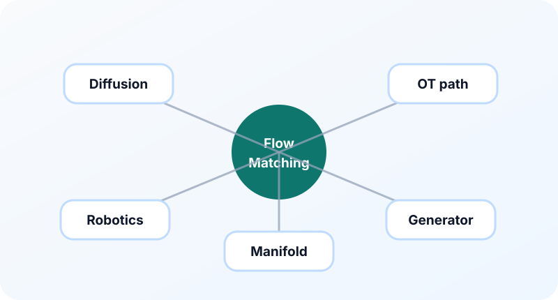

15장. 논문 로드맵¶
이 장의 질문¶
Flow Matching을 어느 정도 이해했다면 다음 고민은 “어떤 논문부터 읽어야 하는가”다. 관련 논문은 diffusion, continuous normalizing flow, optimal transport, rectified flow, conditional generation으로 넓게 퍼져 있다. 무작정 최신 논문부터 읽으면 용어가 겹치고 관점이 달라 길을 잃기 쉽다.
이 장은 논문을 읽는 순서를 제안한다. 정확한 참고문헌 목록과 서지 정보는 부록에서 정리하되, 여기서는 각 묶음이 어떤 질문에 답하는지 중심으로 본다. 목표는 논문 제목을 많이 아는 것이 아니라, 읽을 때 무엇을 확인해야 하는지 아는 것이다.
1단계: Diffusion의 기본 언어¶
Flow Matching을 이해하려면 diffusion의 기본 언어를 알아야 한다. 이유는 많은 논문이 diffusion과 비교하면서 자신의 방법을 설명하기 때문이다.
먼저 확인할 개념은 다음과 같다.
- forward noising process
- reverse denoising process
- score function \(\nabla_x\log p_t(x)\)
- noise prediction objective
- probability flow ODE(Ordinary Differential Equation, 상미분방정식)
- sampling schedule
이 단계에서 중요한 질문은 다음이다.
이 질문은 이후 Flow Matching 논문을 읽을 때 계속 등장한다.
2단계: Normalizing Flow에서 Continuous Normalizing Flow로¶
Flow Matching은 normalizing flow와도 연결된다. Normalizing flow는 단순 분포의 샘플을 invertible transformation으로 데이터 분포로 옮긴다. NICE, RealNVP, Glow 같은 모델은 이산적인 가역 변환을 쌓아 정확한 likelihood를 계산할 수 있게 했다. 이 계열을 읽을 때 핵심은 “샘플 생성”과 “확률 계산”을 동시에 다루려 했다는 점이다.
하지만 normalizing flow에는 구조 제약이 따른다. 변환은 가역이어야 하고, Jacobian determinant를 계산할 수 있어야 한다. 표현력을 높이면 Jacobian 비용이 커지고, 계산을 쉽게 만들면 구조가 제한된다. Continuous normalizing flow는 이 딜레마를 Neural ODE 관점으로 바꾼다. 이산적인 layer를 연속 시간 ODE의 흐름으로 일반화하는 것이다.
핵심 식은 다음이다.
그리고 밀도의 변화는 다음과 연결된다.
Flow Matching은 likelihood 계산을 중심에 두기보다, 원하는 확률 경로의 속도장을 직접 맞추는 방식으로 이 계열과 연결된다. 이 배경을 알면 왜 ODE와 velocity field가 중요한지 더 자연스럽게 이해된다.
이 단계에서 읽을 질문은 다음과 같다.
- 모델이 정확한 likelihood를 계산하려면 어떤 제약이 필요한가?
- Jacobian determinant 계산이 왜 normalizing flow의 병목이 되는가?
- Neural ODE는 ResNet의 잔차 업데이트를 어떤 연속 시간 극한으로 해석하는가?
- CNF는 학습 중 왜 ODE simulation 비용을 부담하는가?
- Flow Matching은 이 비용을 어떤 방식으로 우회하는가?
3단계: Flow Matching 핵심 논문¶
이제 Flow Matching 자체를 다루는 논문을 읽는다. 이 묶음에서 확인해야 할 질문은 다음과 같다.
- 어떤 probability path를 정의하는가?
- 목표 velocity \(u_t(x)\) 또는 조건부 velocity \(u_t(x|z)\)를 어떻게 계산하는가?
- simulation-free training이 어떤 의미로 사용되는가?
- 기존 diffusion 또는 CNF(Continuous Normalizing Flow)와 어떤 관계를 보이는가?
- 실험에서 solver step과 sample quality를 어떻게 비교하는가?
Flow Matching 논문을 읽을 때는 수식의 이름보다 path sampler를 찾는 것이 중요하다. 결국 구현에서 필요한 것은 \(x_t\)와 \(u_t\)를 만드는 방법이기 때문이다.
4단계: Conditional Flow Matching¶
Conditional Flow Matching은 실용적인 학습 방식의 핵심이다. 조건부 경로를 만들고, 조건부 속도를 target으로 학습하면 marginal velocity를 배울 수 있다는 아이디어를 다룬다.
이 단계에서 다시 봐야 할 식은 다음이다.
논문을 읽을 때는 조건 \(z\)가 무엇인지 확인해야 한다. \(z\)가 데이터 샘플인지, 클래스 조건인지, source-target pair인지, 더 복잡한 latent variable인지에 따라 방법의 성격이 달라진다.
5단계: Rectified Flow와 짧은 경로¶
Rectified Flow 계열은 trajectory를 더 곧고 효율적으로 만들려는 문제의식과 연결된다. 이 묶음은 sampling step을 줄이고 싶은 실용적 동기와 잘 맞는다.
읽을 때의 핵심 질문은 다음이다.
- 기존 경로가 왜 비효율적이라고 보는가?
- trajectory를 어떻게 더 곧게 만드는가?
- reflow 또는 반복 개선 절차가 있는가?
- 적은 NFE(Number of Function Evaluations, 함수 평가 횟수)에서 품질이 얼마나 유지되는가?
이 단계에서는 13장과 14장을 함께 떠올리면 좋다. 경로가 곧아지면 solver가 쉬워질 수 있고, 이는 sampling 비용 감소로 이어질 수 있다.
6단계: Optimal Transport와 coupling¶
Optimal transport 관점은 어떤 출발점과 어떤 도착점을 연결할지에 대한 질문을 제기한다. 무작위 pairing이 항상 좋은 것은 아니므로, 더 자연스러운 coupling을 찾으면 velocity field가 정돈될 수 있다.
이 묶음에서 확인할 질문은 다음이다.
- transport cost를 어떻게 정의하는가?
- 정확한 OT(Optimal Transport, 최적 수송)를 쓰는가, 근사를 쓰는가?
- 미니배치 안에서 pairing을 바꾸는가?
- pairing 개선이 solver step 감소나 품질 개선으로 이어지는가?
수학적으로는 어려울 수 있지만, 입문 단계에서는 “경로를 누구와 누구 사이에 만들 것인가”라는 질문으로 이해하면 된다.
7단계: 조건부 생성과 응용¶
마지막으로 class conditioning, text conditioning, image-to-image translation, multimodal generation 같은 응용을 본다. 이 단계에서는 Flow Matching의 기본 loss에 조건 정보가 어떻게 들어가는지 확인한다.
모델은 다음 형태가 된다.
여기서 \(c\)는 클래스, 텍스트, 이미지 조건, 또는 다른 modality 정보일 수 있다.
조건부 생성 논문을 읽을 때는 guidance 방식도 함께 확인한다. diffusion에서 쓰던 classifier-free guidance와 유사한 아이디어가 어떻게 변형되는지 살펴볼 수 있다.
논문 읽기 템플릿¶
각 논문을 읽을 때 다음 표를 채우면 좋다.
| 항목 | 확인할 내용 |
|---|---|
| 문제의식 | 기존 방법의 어떤 한계를 해결하려 하는가? |
| 경로 | \(p_t\) 또는 \(x_t\)를 어떻게 정의하는가? |
| target | 모델이 맞추는 값은 무엇인가? |
| loss | MSE인지, likelihood인지, 다른 objective인지 |
| sampler | ODE, SDE, step 수, NFE |
| 조건 | class, text, pair, latent variable 사용 여부 |
| 실험 | 어떤 데이터셋과 metric을 쓰는가? |
| 한계 | 비용, 안정성, 이론 가정, 구현 복잡도 |
이 템플릿을 쓰면 논문이 달라도 같은 축으로 비교할 수 있다.
시각 자료¶

- 논문 로드맵 타임라인: diffusion, CNF(Continuous Normalizing Flow), Flow Matching, CFM(Conditional Flow Matching), Rectified Flow, OT(Optimal Transport, 최적 수송) 응용을 흐름으로 배치한다.
- 읽기 순서 지도: 기본 수학, diffusion, CNF, FM, 응용으로 이어지는 dependency graph.
- 논문 분석 카드: 경로, target, sampler, 조건을 한 장의 카드로 요약하는 템플릿.
요약¶
- Flow Matching 논문을 읽기 전에 diffusion의 score, noise prediction, probability flow ODE 언어를 알고 있으면 좋다.
- Continuous normalizing flow는 ODE와 velocity field 관점을 이해하는 중요한 배경이다.
- Flow Matching 핵심 논문은 path와 target velocity를 중심으로 읽어야 한다.
- Rectified Flow와 Optimal Transport 계열은 경로를 더 효율적으로 만들려는 문제의식과 연결된다.
- 논문을 읽을 때는 문제의식, 경로, target, loss, sampler, 조건, 실험, 한계를 같은 템플릿으로 정리하는 것이 좋다.